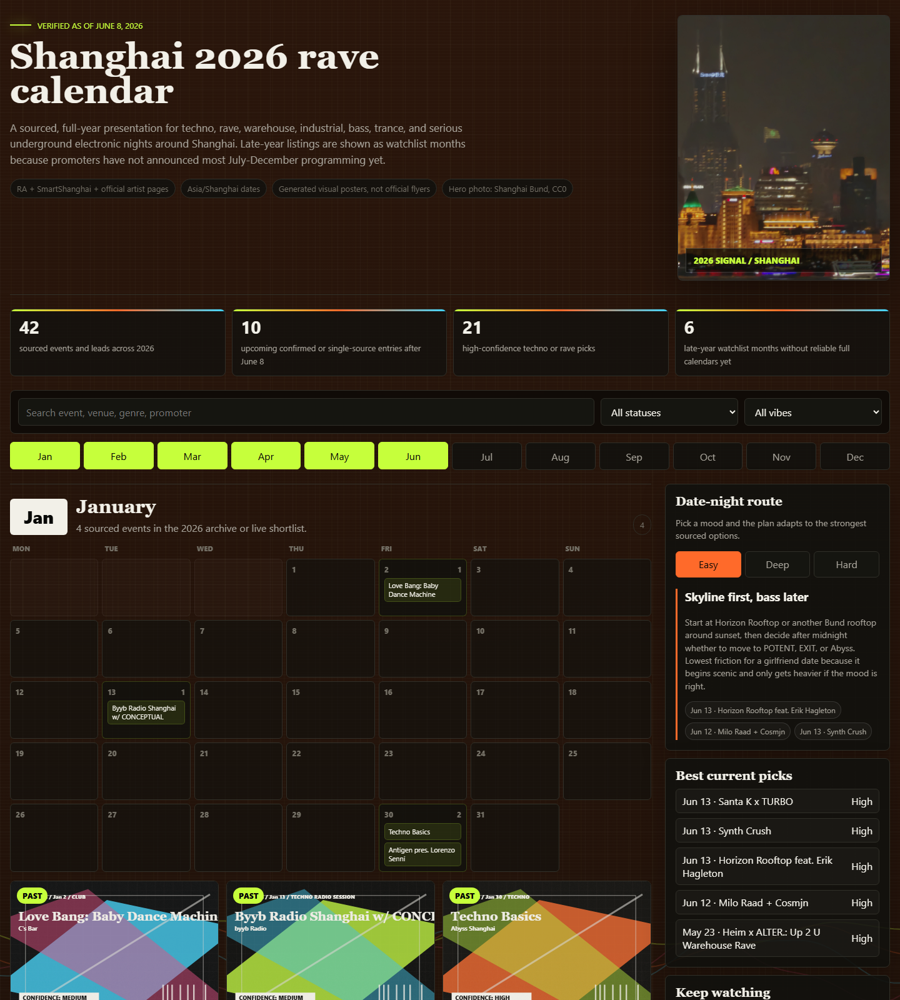

festival / Watch
Shanghai Tonight Night Festival
Watch-level umbrella listing for Shanghai Tonight: useful as summer nightlife context because the city source says the campaign spans many night events, but check each actual program, venue, lineup, and ticket path before treating it as a music recommendation.

KindFestival / multi-event lead
Date window2026-06 to 2026-09
Program timeCitywide night events
Venue / areaCommercial areas, waterfronts, parks, museums, and neighborhoods
Formatcitywide nightlife campaign
Program statusnearly 200 events across seven nighttime categories
Ticketingvaries by individual partner event
Source layerwatchlist
Event Tags
Simple tags for sound, room context, ticket/source status, and details that still need a source check.
How We Recommend This
- RecommendationKept on Watch because the sound and room fit points toward social house, disco, or date-route electronic music at Commercial areas, waterfronts, parks, museums, and neighborhoods; wait for firmer practical details before treating it as a pick.
- Best forBest for a more social, house-forward, or date-friendly electronic music route.
- Verify before goingConfirm the latest event page, ticket availability, lineup, start time, and venue address before making plans.
- Source confidenceWatch-level confidence from Shanghai Municipal Commission of Commerce; keep visible but verify with direct venue, promoter, ticketing, RA, or official artist evidence.
Festival Program
Date statusumbrella season confirmed; individual events vary
Acquisition usetop-level Shanghai summer nightlife landing page and weekly discovery funnel
- Nearly 200 night eventsOfficial city commerce source says the campaign covers shopping, dining, entertainment, reading, performances, sports, and sightseeing.
- Festival discovery umbrellaUse this as a source hub for individual partner events, not as a single ticketed night.
Source Trail
- Shanghai Municipal Commission of Commerce watchlist / checked 2026-06-14
This festival lead is intentionally noindexed until exact dates, tickets, lineup, or a direct official source confirms the details.
Trust Ledger
- Last checked2026-06-14
- Selection basisWatchlist lead kept visible for source monitoring; do not treat date, lineup, or ticketing as final until stronger evidence lands.
- Commercial relationshipNo paid placement recorded.
- Correction routeSend source fixes through RED 980793145 or the corrections policy.
- PolicyHow We Recommend / Corrections